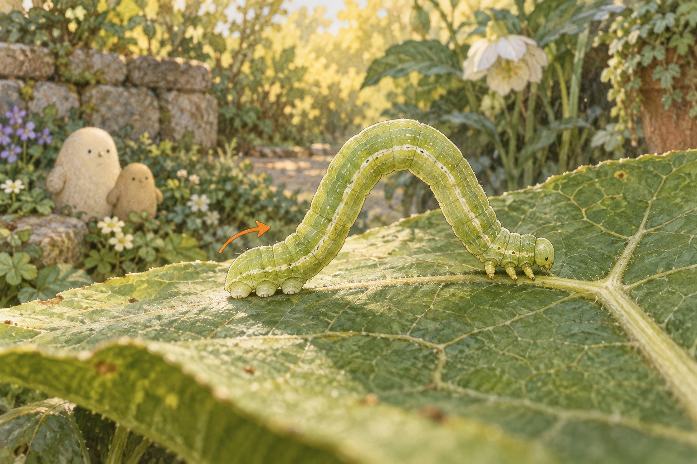
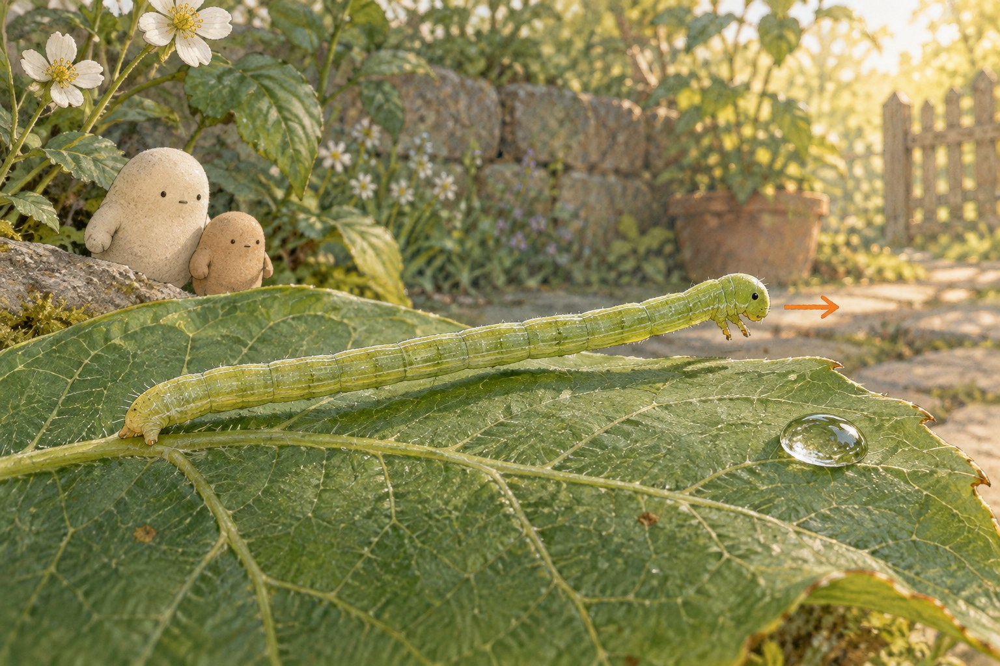
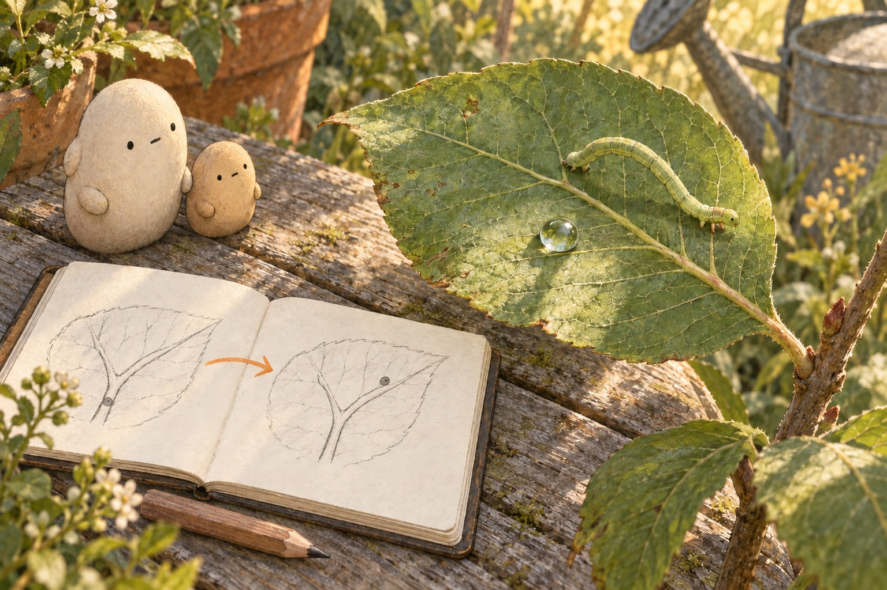

WONDER DAILY GRADE 2 · WRITING
Explain a tiny grip.
A loop goes somewhere. · Curiosity day
Name __________________________ Date _______________
Choose a scene. Write two linked sentences: one observation, then an explanation using because. Draw a detail that supports your idea.



Draw the detail you noticed. Add an arrow to show movement or a dot to show position.
prolegs · anchor · loop · reach · evidence · inference · because
The middle rises because … What happens when the rear gets closer to the gripping front?
The rear grip matters because … What keeps the body in place while the front reaches?
I infer that it moved because … Compare the head with the same vein fork in both sketches.
Reread your words. Does the detail support your explanation? Check the first capital and each ending mark.